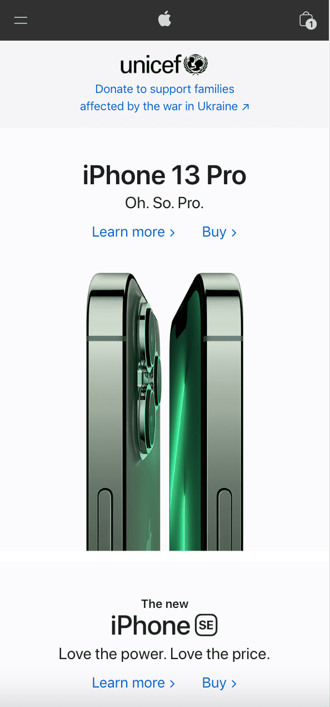
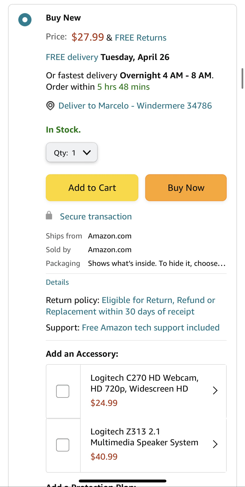
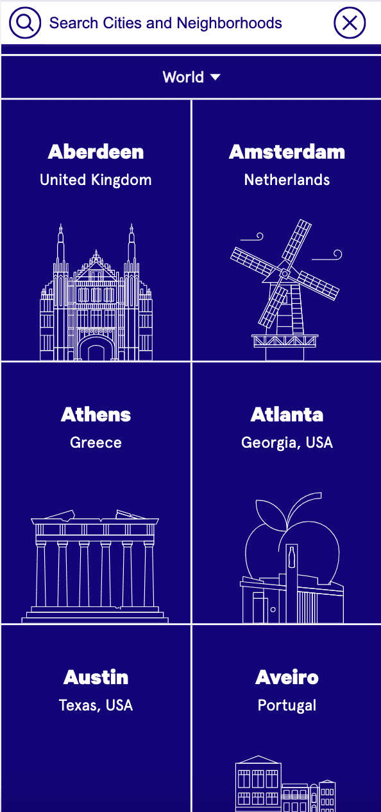

White Space / Clean Design

Apple uses white space and clean design very well, its website is designed to show its products and give users premium and accessible content, there aren't components to distract users from seeing its products.
Hick's Law

Amazon uses Hick's law to help logged-in users decide on buying items quickly with the button "Buy Now". It is a great principle for online stores that want to increase their sales.
P.A.R.C: Contrast

The on the grid website is a good example of contrast, it uses flashy colors to create a fun and well-designed environment encouraging users to utilize its services.